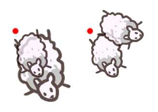
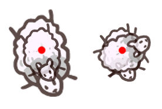
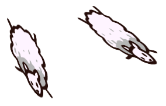

Creating and using images is a very easy task in LÖVE. First we need an image. I'm going to use this image:
Of course, you can use any image you like, as long as it's of the type .png. Make sure the image is in the same directory as your main.lua.
First we need to load the image, and store it in a variable. For this we will use love.graphics.newImage. Pass the name of the image as a string as first argument. So if you have a
function love.load()
myImage = love.graphics.newImage("sheep.png")
endYou can also put your image in a subdirectory, but in that case make sure to include the whole path.
myImage = love.graphics.newImage("path/to/sheep.png")Now our image is stored inside myImage. We can use love.graphics.draw to draw our image.
function love.draw()
love.graphics.draw(myImage, 100, 100)
endAnd that is how you draw an image.
Let's take a look at the other arguments of love.graphics.draw(). All arguments besides the image are optional.
r
The rotation (or angle). All angles in LÖVE are radians. I'll explain more about radians in another chapter.
sx and sy
The x-scale and y-scale. If you want to make your image twice as big you do
love.graphics.draw(myImage, 100, 100, 0, 2, 2)
You can also use this to mirror an image with
love.graphics.draw(myImage, 100, 100, 0, -1, 1)
ox and oy
The x-origin and y-origin of the image.
By default, all the scaling and rotating is based on the top-left of the image.

This is based on the origin of the image. If we want to scale the image from the center, we'll have to put the origin in the center of the image.
love.graphics.draw(myImage, 100, 100, 0, 2, 2, 39, 50)

kx and ky
These are for shearing (which doesn't have a k at all so I'm not sure what to make of it).
With it you can skew images.

love.graphics.print, which we used before to draw text, has these same arguments.
x, y, r, sx, sy, ox, oy, kx, ky
Again, all these arguments can be left out. We call these optional arguments.
The image that love.graphics.newImage returns, is actually an object. An Image Object. It has functions that we can use to edit our image, or get data about it.
For example, we can use :getWidth() and :getHeight() to get the width and height of the image. We can use this to put the origin in the center of our image.
function love.load()
myImage = love.graphics.newImage("sheep.png")
width = myImage:getWidth()
height = myImage:getHeight()
end
function love.draw()
love.graphics.draw("sheep.png", 100, 100, 0, 2, 2, width/2, height/2)
endWe load an image with myImage = love.graphics.newImage("path/to/image.png"), which returns an Image Object that we can store in a variable. We can pass this variable to love.graphics.draw(myImage) to draw the image. This function has optional arguments for the position, angle and scale of the image. An Image Object has functions that you can use to edit the image, or get data about it.